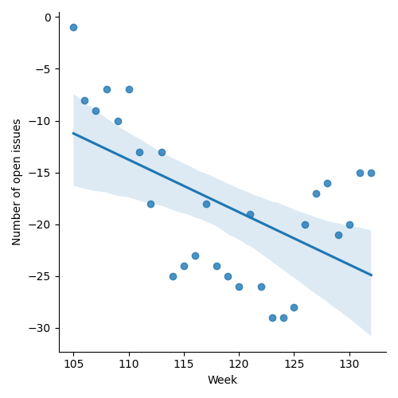
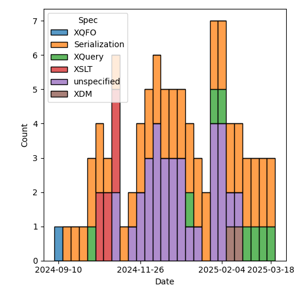
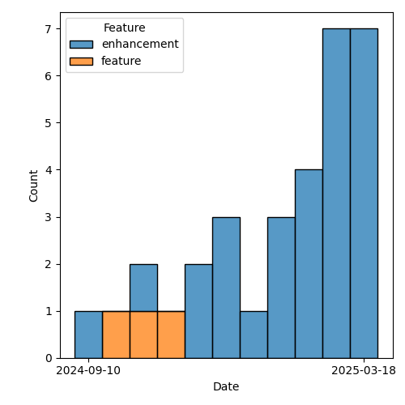

QT4 CG Meeting 114 Minutes 2025-03-18
Meeting index / QT4CG.org / Dashboard / GH Issues / GH Pull Requests
Table of Contents
- Draft Minutes
- Summary of new and continuing actions
[0/4] - 1. Administrivia
- 2. Technical agenda
- 2.1. Review of pull requests
- 2.1.1. PR #1877: 1866 Disambiguate TypeSpecifier syntax
- 2.1.2. PR #1882: 982 Editorial rewrite of scan-left and scan-right
- 2.1.3. PR #1879: 1857, 1860: Add more options to parse-xml
- 2.1.4. PR #1856: 998 Add boundary and lookahead/behind assertions
- 2.1.5. PR #1867: 1341 Drop position from fold callbacks
- 2.1.6. PR #1883: 882 Replace fn:chain by fn:compose
- 2.1. Review of pull requests
- 3. Any other business
- 4. Adjourned
Draft Minutes
Summary of new and continuing actions [0/4]
[ ]QT4CG-082-02: DN to work with NW to come to agreement on the fn:ranks proposal[ ]QT4CG-107-05: JLO and DN to consider a proposal for system defined records.[ ]QT4CG-110-04: JK to consider a PR for #366, xsl:use-package with xsl:package-location[ ]QT4CG-112-01: JLO to propose a concrete example that uses “.” in a ~%method~s.[ ]QT4CG-113-02: NW to investigate a way to show extra attributes in the syntax summary.
1. Administrivia
1.1. Roll call [11/13]
Regrets: BTW.
[X]David J Birnbaum (DB)[X]Reece Dunn (RD)[ ]Sasha Firsov (SF)[X]Christian Grün (CG)[X]Joel Kalvesmaki (JK)[X]Michael Kay (MK)[X]Juri Leino (JLO)[X]John Lumley (JWL)[X]Dimitre Novatchev (DN)[X]Wendell Piez (WP)[X]Ed Porter (EP)[ ]Bethan Tovey-Walsh (BTW)[X]Norm Tovey-Walsh (NW). Scribe. Chair.
1.2. Accept the agenda
Proposal: Accept the agenda.
Accepted.
1.2.1. Status so far…
These charts have been adjusted so they reflect the preceding six months of work.

Figure 1: “Burn down” chart on open issues

Figure 2: Open issues by specification

Figure 3: Open issues by type
1.3. Approve minutes of the previous meeting
Proposal: Accept the minutes of the previous meeting.
Accepted.
1.4. Next meeting
The next meeting is scheduled for 25 March 2025.
Note: The QT4CG meeting is scheduled on UK/European civil time. The United States switched to daylight saving time on 9 March 2025, so the meeting of 25 March will be one hour later there (12:00 EDT, 09:00 PDT) until the UK/Europe also switches (on 30 March 2024).
No regrets heard.
1.5. Review of open action items [2/7]
(Items marked [X] are believed to have been closed via email before this agenda was posted.)
[ ]QT4CG-082-02: DN to work with NW to come to agreement on the fn:ranks proposal[ ]QT4CG-107-05: JLO and DN to consider a proposal for system defined records.[ ]QT4CG-110-04: JK to consider a PR for #366, xsl:use-package with xsl:package-location[ ]QT4CG-112-01: JLO to propose a concrete example that uses “.” in a ~%method~s.[X]QT4CG-113-01: MK to make a PR to drop the position callback on fold-left/fold-right[ ]QT4CG-113-02: NW to investigate a way to show extra attributes in the syntax summary.[X]QT4CG-113-03: JWL to consider shadow attributes and all the other standard attributes on xsl:record.
1.6. Review of open pull requests and issues
This section summarizes all of the issues and pull requests that need to be resolved before we can finish. See Technical Agenda below for the focus of this meeting.
1.6.1. Blocked
1.6.2. Merge without discussion
The following PRs are editorial, small, or otherwise appeared to be uncontroversial when the agenda was prepared. The chairs propose that these can be merged without discussion. If you think discussion is necessary, please say so.
- PR #1880: Editorial revision of fn:function-identity
- PR #1878: 1851 Make ?variety optional; explain namespace-sensitive
PR #1875: 1861 Params passed automatically through next-match- PR #1873: 1869 duplicate values
Proposal: Merge without discussion, except for #1875
Accepted.
1.6.3. Close without action
It has been proposed that the following issues be closed without action. If you think discussion is necessary, please say so.
- Issue #1863: add \U \u L \u \E to replace() (case conversion)
Proposal: Close without any further action.
Accepted.
2. Technical agenda
2.1. Review of pull requests
2.1.1. PR #1877: 1866 Disambiguate TypeSpecifier syntax
See PR #1877
I was tempted to mark this one merge-without-discussion, but let’s see if we all agree on the proposed syntactic change.
Proposal: Accepted.
2.1.2. PR #1882: 982 Editorial rewrite of scan-left and scan-right
See PR #1882
I was tempted to mark this one merge-without-discussion, but there’s an open comment on the PR (but not an especially substantive one, AFAICT).
- MK: I thought that scan-left and scan-right should be in the same style.
- CG: The simple map operator doesn’t have a formal equivalent.
- MK: Yes, reducing the number of constructs is usefull
Some discussion of other primitives; we’re using for-each a lot.
- MK: Aspirationally, I’d like to get the equivalents to be on primitives in the data model.
- DN: Speaking of primitives; for-each can be expressed using fold-left or fold-right.
- MK: Or recursion.
Proposal: Accepted, without futher edits.
Accepted.
2.1.3. PR #1879: 1857, 1860: Add more options to parse-xml
See PR #1879
I was tempted to mark this one merge-without-discussion, but some brief
discussion of entity-expansion-limit may be in order.
- MK: I did a revision in the light of the comment on
entity-expansion-limit.
MK reviews the options on fn:parse-xml().
- NW: Expanding an external entity can change the base URI for entities within that entity…but I don’t think anyone is likely to misread that.
- NW: Many XPointer schemes aren’t supportable by a streaming implementation in the parser.
- JLO: What do you do if you have an override? Is it then an error?
- MK: I think we should leave it up to the implementation.
- WP: Thank you, this is awesome. Point of clarification, numeric character
references are also allowed (even if entity expansion is allowed).
- … It might also be nice to have some examples.
- MK: There’s always room for more tutorial material.
- RD: Should we put a note in about potential security issue? One of the reasons to limit entity expansion is to prevent malicious “billion laughs” attacks.
- NW: I’m reluctant.
- WP: I don’t think we should explain how to attack the parser.
- RD: A caution on setting the limit too high.
- CG: I would agree that if you’re looking for entity expansion limit on the web, you’ll find lots of answers.
Proposal: Accept this PR.
Accepted.
2.1.4. PR #1856: 998 Add boundary and lookahead/behind assertions
See PR #1856
MK introduces the PR.
- MK: This PR basically replaces the whole regular expression section with a new one.
- MK: We now have a processing model for regular expressions that allows us to
define some terms.
- … Some attempt to standardize terminology for capture groups and capturing subexpressions.
The rules for regular expression matching in different libraries are often incompletely specified. It’s possible that the rules here aren’t precisely the same as other libraries.
- MK: The constraint on lookbehind is stronger than some, but it means you don’t have to backtrack.
- MK: The flags are unchanged; the semantics of some of the functions has been clarified.
- MK: Functions like
fn:tokenize()now allow the regular expression to match a zero-length string and define rules for what it means.- … It’s common to split a string into characters if the regex matches the zero length strings. But, again, there’s lots of variation in the libraries.
- RD: Do we specify a minimum version of Unicode? That will effect what the character classes match and what languages are available.
- MK: I think we recommend implementations to support the latest, but we don’t impose any constraints.
Some discussion of whether we should impose a constraint.
- RD: Would it be worth adding a note that the Unicode group matching is dependent on the version of Unicode.
- MK: We probably get some of that from XSD 1.1.
- JK: I’m grateful, this must have been a lot of work.
- JLO: I really like the changes; my only question is what lead to the decision to split on space instead of between characters when the string is a zero length.
- MK: That’s not new; tokenize with no regular expression was already defined in 3.1 to split on space boundaries.
Some discussion of how to split; the empty string will work.
- RD: Could the grammar be written in the same style as the XPath 3.1 grammar?
- MK: Yes. The semantics of having more than one grammar might be a bit tricky.
- RD: Don’t we have that with XSLT?
- MK: No, there’s only one grammar in the document.
- JWL: Where is the other grammar in F&O? The grammars for XPath don’t appear in here.
Proposal: Accept this PR.
Accepted.
2.1.5. PR #1867: 1341 Drop position from fold callbacks
See PR #1867
- MK: The main thing to be aware of is that it involved changing a number of the
formal expansions of other functions. For example,
fn:replicateis no longer easily defined in terms offn:fold-left.
Proposal: Accept this PR.
Accepted.
2.1.6. PR #1883: 882 Replace fn:chain by fn:compose
See PR #1883
MK introduces the PR and reviews the examples.
- MK: One key difference is that the this function is going to be most useful when it’s going to be reused.
- MK: I was most motivated by the use of the compose in a callback function.
- MK: It’s simpler than
fn:chain, it returns a function rather than applying the function and it doesn’t handle the complexity of handling functions with arities other than one. - DN: I fully approve of
fn:compose, but I think there’s a questionable thing as well.- … There’s no way to compare
fn:composetofn:chain. Thefn:chainfunction provides more functionality thanfn:composein every case. - … There is a difference of quality here.
- … One of the main differences, one of the things that
fn:chainprovides, is the ability to have multiple arguments. - … In
fn:chain, there are 25 examples and in 8 of them, there’s a function with arity greater than one. - … One might say that such functionality is rarely used. But that’s like saying an airplane is rarely used. That’s true, but it’s very useful.
- … There’s no way to compare
- JLO: I am not a fan of
fn:chainand I’d be happy with justfn:compose.
There’s a typo in the last example: “let”.
- JLO: Trying to combine functions with variable arity using
fn:chainhas a lot of edge cases. I like this better. - MK: My main thinking on this was that if you know statically what functions
you want to call, it’s very easy to compose them using the arrow operator. The
case for the compose function is when you have dynamic functions to compose.
With
fn:chainas it’s currently defined, you have to know what the arities are so it’s hard to find examples of creating a completely flexible function chain. I found that logic complex; it’s going to sometimes work, but I found it frustrating.- … I also trying to exercise some discipline, removing something to prevent duplication.
- RD: Would it be possible to restrict
fn:composeto functions of the same arity.
Discussion to continue.
3. Any other business
Should we revisit EXPath Archive?
- MK: I’m concerned about our workload.
- CG: Some concerns as MK, I’d like to spend time on it, but I want to do some other things first.
- WP: Is there overlap with XProc?
- NW: I’m not sure.
- JWL: I can convert it to the new system and we can decide if we want to do it.
- … There is work to be done; it isn’t just a matter of updating the spec.
- … We’d need an implementor.
Consensus does not seem to be for taking this work on now.